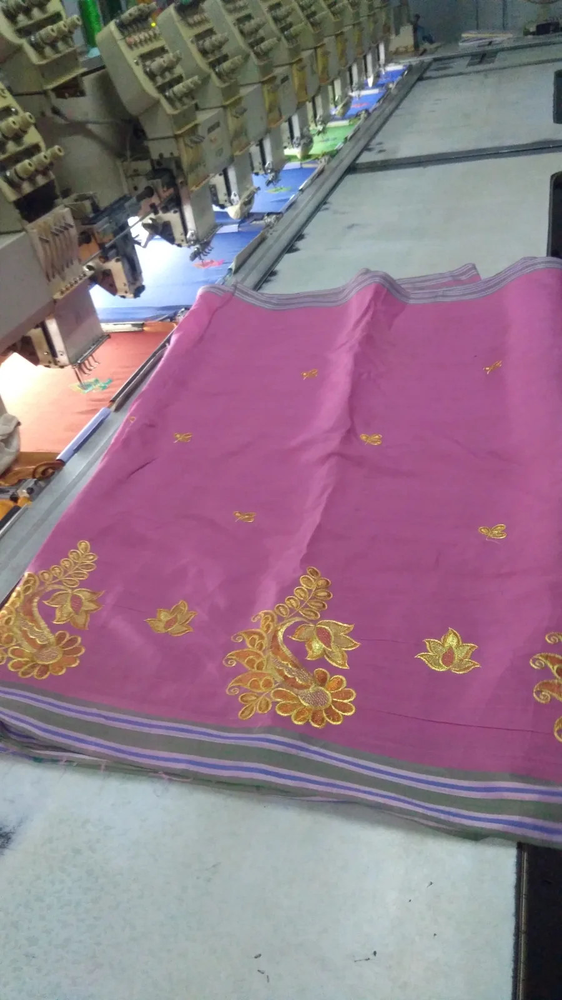

- Programa de pontos
- Tecido no bastidor
- Formação do bordado
Para que serve e como funciona
O desenho é convertido num programa de pontos. A máquina desloca o tecido preso num bastidor enquanto as agulhas formam o bordado. Máquinas com várias cabeças podem repetir o motivo em mais de uma posição de trabalho. ↗
Artigos e aplicações
Vestuário e certos sacos podem ser avaliados para bordado. É necessário conseguir prender e alcançar a zona escolhida; forros, bolsos e costuras podem impedir o acesso mesmo quando o tecido parece adequado.
Limitações e decisões
O bordado tem espessura e textura. Letras muito pequenas e detalhes finos podem exigir simplificação. Tecido, fio, densidade e estabilização devem ser avaliados em conjunto para evitar deformação e preservar a leitura.
O que confirmar no trabalho
Peça a avaliação da referência, da arte e do acabamento pretendido. Confirme a área acessível, a preparação necessária e a forma de validar o resultado.
Fontes e âmbito
As referências de fabricantes e fornecedores descrevem os seus próprios processos ou equipamentos.